Creating a Network¶
In its simplest form, a CRAM network consists of a single node with one inflow and one demand. The inflow specifies the amount of water entering the system and the demand specifies the amount of water leaving the system. Because CRAM enforces mass-balance, all of the flow entering through the Inflow must exit through the Demand. If the demand has been constrained to a capacity less than the Inflow flow found in one of the minor time steps the model will determine that an infeasible solution has occured.
Most Excel CRAM models will consist of a few hundred nodes connected by a larger number of links allowing water (flow) to be delivered to many different competing demands from a variety of sources. CRAM optimizes the system to determine the most efficient use of the water given the delivery constraints (both physical and administrative). After a solution has been attained, the user may want to experiment with additional stresses, constraints, or options on the simulation network. This is a core component of CRAM’s scenario analysis.
The modeling tool supports reservoirs, instream flows, decrees, and return flows which can greatly increase the complexity of models. CRAM’s operation steps allow modeling of the most complex exchanges and water rights. Please read the additional information about these features to be aware of “gotchas” that you may encounter when using the Excel CRAM modeling tool. The blue note boxes provide tips that may be helful in avoiding modeling errors (infeasible solutions).
Adding a Node¶
Nodes are the basic building block of a CRAM network. Nodes are used to connect other network arc types (e.g., links, inflows, demands) and help determine the potential paths for flow in the model. There are two kinds of nodes in a model.
- General nodes are nodes that have a single instance and physical location in the model. You can identify a general node because it will be represented by a circle with a number inside of it.
- Special case nodes are related to mass balance. In each CRAM model there is one mass-balance node, but in the network diagrams (see The Network Schematic) it is represented in multiple locations. However, they all represent the same node in the model. For instance an inflow arc is attached from a mass balance node, while a demand arc is attached going-to a mass balance node. Mass balance nodes in the network schematic an be identified by the MB prefix before the node number. The MB node number is irrelevant, and simply used for book keeping.
All nodes in the network maintain mass balance during every step of the solution.
To add a node to the network click on the Create Node button on the toolbar (shown below) or click on the Excel CRAM->Network->Add Object… menu item and select Node from the object type dropdown box.
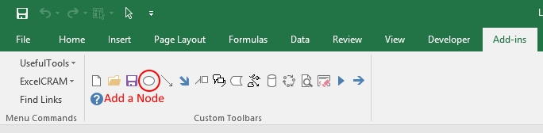 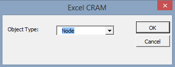Node Basics¶
The basic features necessary to add a model node are discussed in this section. Here we step through the fields on the Edit Node dialog box.
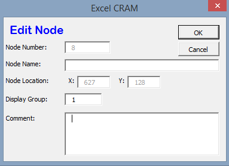The Node Number is automatically assigned by Excel CRAM. Nodes can not be reused in the network.
The Node Name is user-defined, and is typically left blank. If the Node Name is used, it must be an ASCII string (alphanumeric and/or special characters). A good example for a node name would be a stream gage name, location, or other geographic reference.
The Comment box allows the user to add any notes about the node that might be important to the design.
Advanced Node Setup¶
- The Display Group is set to “1” by default. The display group is an advanced feature that allows the user to hide network objects (nodes, links, etc.) in the network schematic. For more on display groups, see Model Details documentation.
Adding a Link¶
A link connects two nodes. It has four user configurable parameters which help determine the amount of flow passing from the “From Node” to the “To Node” in the model. The four parameters are:
- High: The High parameter is the maximum amount of flow that can pass through the link in a single solution time step. Typically the default value of “Infinite” is used. However, integer values are commonly used to represent pipeline capacities.
Note
Advanced Note: If the total amount of water at the From Node is greater than the sum of all High parameters on all arcs leaving that node, an infeasible solution will occur. Using the default value of “infinite” avoids this problem.
- Low: The Low parameter is the minimum amount of flow that MUST pass through the link in a single solution time step. Typically the default value of “0” is used.
Note
If the Low is set higher than the High parameter, an infeasible solution will occur. If the From Node for this link does not have as much flow into it as the sum of all of the Low parameters leaving that node, an infeasible solution will occur.
- Priority: The Priority parameter helps the network to determine the relative priority of sending water through a link. Priorities (or ranks) in the network model are additive.
Note
As a model becomes more complex, the additive values of different flow paths can become more complicated.
- Flow: The flow parameter is the optimized result of a model solution. The user is unable to change this value - it is model output only.
To add a link to the network click on the Create Link button on the toolbar (shown below) or click on the Excel CRAM->Network->Add Object… menu item and select Link from the dropdown box.
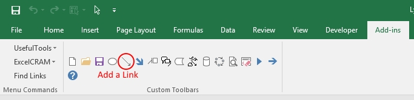 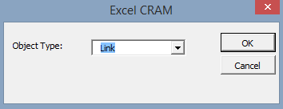Link Basics¶
The basic features necessary to build a model link are discussed in this section. Here we step through the fields on the Edit Link dialog box.
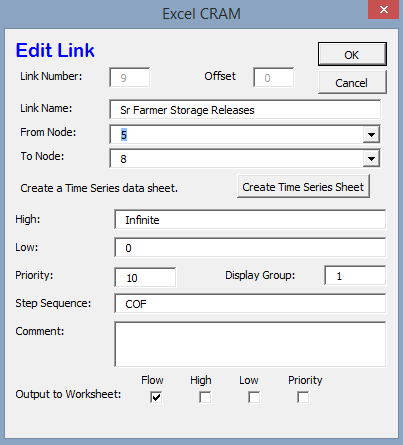The Link Number is automatically assigned by Excel CRAM. Link numbers can not be reused in the network.
The Link Name is a user-defined ASCII string that povide a common name to describe the reach. It is recommended that the name be unique within the first 32 characters but this not required. The name should normally be less than 256 characters in length.
The From Node identifies the node at the upstream end of the link.
The To Node identifies the node at the downstream end of the link. The To Node is where the flow from this link enters and mixes with all other sources (links).
Create Time Series Sheet/Go to Time Series Data button. This button has one of two labels on it. If the link being edited does not currently have any time series data associated with it, the button will read Create Time Series Sheet. Clicking on the button will create a formatted worksheet in the current scenario to hold timeseries data for the link. The user will need to populate the sheet with the appropriate data.
Note
Most links DO NOT have time series data associated with them. Links used to build advanced reservoirs are an exception to this.
The High field provides a space to specify a constant maximum capacity for the link. A value provided here will last for all minor time steps in a model run unless there is a Link Time Series Data sheet to override the value. A value of “Infinite” here indicates that the link does not have a capacity limit.
The Low field provides a space to specify a constant minimum flow for the link. A value provided here will last for all minor time steps in a model run unless there is a Link Time Series Data Sheet in the current scenario with the Low parameter specified there.
Note
If a negative value is used in this field, water will flow “backwards” through the link generating a negative priority for each unit of flow transferred. This should be used with caution, and it is recommended the priority value is set to zero.
The Priority field provides a space to enter the priority to be assigned to that link.
The Comment box allows the user to add any notes about the node that might be important to the design.
Advanced Link Setup¶
- The Display Group is set to “1” by default. The display group is an advanced feature that allows the user to hide network objects (nodes, links, etc.) in the network schematic. For more on display groups, see Model Details documentation.
- The Step Sequence allows you to enter the state of the element (Open, Closed, Frozen) for each operation step. More information can be found in Model Details documentation.
Note
The default value is “O” for open. Other values should only be used by advanced CRAM users.
- Output To Worksheet provides a list of check boxes for Link parameters that can be written to the output worksheet when the model is run.
Adding an Inflow¶
Inflows provide the source of water for an Excel CRAM network. Once in the model the water (flow) is divided up among the demands based on the total priority of routing, from the inflow to the bottom of the network. Behind the scense, the model “circulates” the water using the mass balance nodes.
- An inflow can be connected TO any node (except a mass balance node)
- An inflow will always be connected FROM the mass balance node
Inflows only have one parameter, Flow. For Inflows, the Flow defines both the High and the Low on the arc. If the Flow from an inflow is not able to find a route through the network and back to the mass balance node an infeasible solution will occur.
To add an inflow to the network click on the Create Inflow button on the toolbar (shown below) or click on the Excel CRAM->Network->Add Object… menu item and select Inflow from the dialog box that appears.
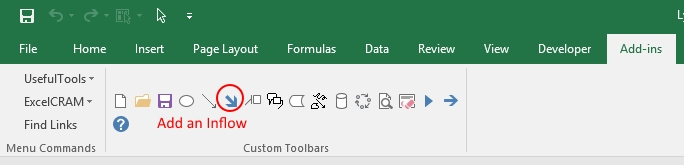Inflow Basics¶
The basic features necessary to add model inflows are discussed in this section. Here we step through the fields on the Edit Inflow dialog box.
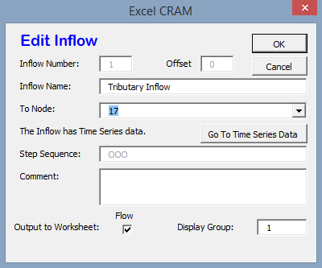The Inflow Number is automatically assigned by Excel CRAM. Inflow numbers can not be reused in the network.
The Inflow Name is a user-defined ASCII string that povide a familiar name to describe the inflow. Inflows are ALWAYS named by users within the model. We recommend that the name be unique within the first 32 characters but this not required. The name should normally be less than 256 characters in length.
The To Node identifies the node at the receiving end of the inflow. The To Node is where the flow from the inflow enters and mixes with all other sources (links or inflows).
Create Time Series Sheet/Go to Time Series Data button. This button has one of two labels on it. If the inflow being edited does not currently have any time series data associated with it the button will read Create Time Series Sheet. Clicking on the button will create a formatted worksheet in the current scenario to hold timeseries data for the link. The user will need to populate the sheet with the appropriate data.
Note
Inflows should always have time series data associated with them. Failure to create a Time Series Sheet will result in a zero inflow.
The Comment box allows the user to add any notes about the node that might be important to the design.
Advanced Inflow Setup¶
- The Step Sequence specifies the operation steps to be used for this Inflow. More information can be found in Model Details documentation.
Note
The default value is “O” for open. Other values should only be used by advanced CRAM users.
- The Display Group is set to “1” by default. The display group is an advanced feature that allows the user to hide network objects (nodes, links, etc.) in the network schematic. For more on display groups, see Model Details documentation.
- Output To Worksheet provides a list of check boxes for the Inflow parameter that can be written to the output worksheet when the model is run.
Adding a Demand¶
Demands are used to route water to specific users in the Excel CRAM network (e.g., cities, farmers, ditches). The water that passes through a demand arc is not available for use anywhere else in the network during the same time step. Demands can be thought of as the final destination of water within the network.
The capacity of a demand is determined by the High parameter while the minimum flow that must pass through a demand arc is set by the Low parameter.
- A demand can be connected FROM any node (except a Mass-Balance node)
- A demand is always connected TO a mass balance node
To add a demand to the network click on the Create Demand button on the toolbar (shown below) or click on the Excel CRAM->Network->Add Object… menu item and select Demand from the dialog box that appears.
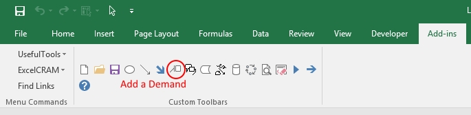 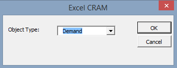Demand Basics¶
The basic features necessary to add model demands are discussed in this section. Here we step through the fields on the Edit Demand dialog box.
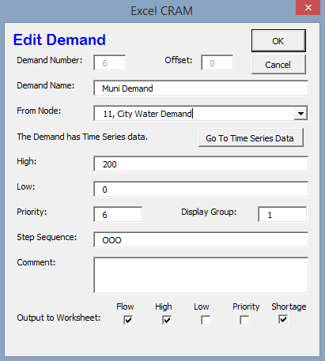The Demand Number is automatically assigned by Excel CRAM. Demand numbers can not be reused in the network.
The Demand Name is a user-defined ASCII string that povide a familiar name to describe the demand. Demands are ALWAYS named by users within the model. We recommend that the name be unique within the first 32 characters but this not required. The name should normally be less than 256 characters in length.
The From Node identifies the node at the upstream or distributing side of the demand.
Create Time Series Sheet/Go to Time Series Data button. This button has one of two labels on it. If the demand being edited does not currently have any Time Series data associated with it the button will read Create Time Series Sheet. Clicking on the button will create a formatted worksheet in the current scenario to hold timeseries data for the link. The user will need to populate the sheet with the appropriate data.
Note
Demands should always have time series data associated with them. Failure to create a Time Series Sheet will result in the demand having a default value of infinite.
The High field provides a space to specify a constant maximum capacity for the demand. A value provided here will last for all minor time steps in a model run unless there is Demand Time Series Data Sheet to override the value. A value of “Infinite” here indicates that the demand does not have a capacity limit. This can be useful for creating a demand that will take all available flow in a network.
The Low field provides a space to specify a constant minimum flow for the demand. A value provided here will last for all minor time steps in a model run unless there is a Demand Time Series Data Sheet in the current scenario with the Low parameter specified there.
Note
If the user sets the Low value higher than the available water in a time step an infeasible solution will occur. Non-zero low values should be used sparingly
The Priority field provides a space to enter the priority assigned to that demand.
Advanced Demand Setup¶
- The Display Group is set to “1” by default. The display group is an advanced feature that allows the user to hide network objects (demands, links, etc.) in the network schematic. For more on display groups, see Model Details documentation.
- The Step Sequence allows the user to enter the state of the element (Open, Closed, Frozen) for each operation step.
Note
The default value is “O” for open. Other values should only be used by advanced CRAM users.
- The Comment box allows the user to add any notes about the node that might be important to the design.
- Output To Worksheet provides a list of check boxes for Demand parameters that can be written to the output worksheet when the model is run.
Adding a Reservoir¶
An Excel CRAM Reservoir is used to simulate the storage of water in a reservoir. This network object may be used to represent either surface or groundwater storage systems. Reservoirs can be built to include complex operations such as hydropower, water rights exchanges, flood storage and dead storage.
To add a demand to the network click on the Create Demand button on the toolbar (shown below) or click on the Excel CRAM->Network->Add Object… menu item and select Demand from the dialog box that appears.
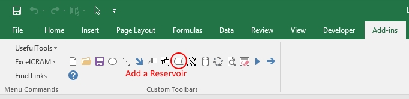 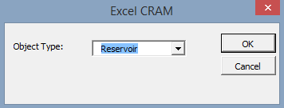Reservoir Basics¶
The basic features necessary to add reservoirs are discussed in this section. Here we step through the fields on the Edit Reservoir dialog box.
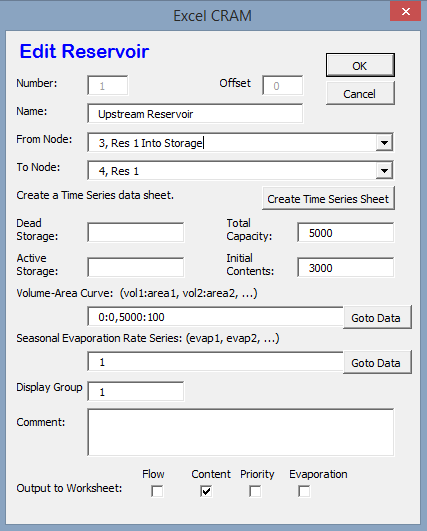The Reservoir Number is automatically assigned by Excel CRAM. Reservoir numbers can not be reused in the network.
The Reservoir Name is a user-defined ASCII string that povide a familiar name to describe the reservoir. Reservoirs are ALWAYS named by users within the model. We recommend that the name be unique within the first 32 characters but this not required. The name should normally be less than 256 characters in length.
The From Node identifies the node at the upstream or distributing side of the reservoir.
The To Node identifies the node at the downstream end of the inflow. This node is where the flow stored by the reservoir in the previous time step (Minor Time Step) is released back to the network. A link from this node to the From Node will allow the reservoir to retain storage from one time step (Minor Time Step) to another.
Create Time Series Sheet/Go to Time Series Data button. This button has one of two labels on it. If the reservoir being edited does not currently have any Time Series data associated with it the button will read Create Time Series Sheet. Clicking on the button will create a formatted worksheet in the current scenario to hold timeseries data for the link. The user will need to populate the sheet with the appropriate data.
Note
Reservoirs usually do not have time series data associated with them. However, links that are a part of the reservoir, such as those used to represent target storage, usually do have time series data.
** xxx The Dead Storage Field is currently inactive. xxx **
** xxx The Active Storage Field is currently inactive. xxx **
The Total Capacity provides a place to record the total storage capacity of the reservoir. This can be either active storage or total storage depending on how you have decided to model the reservoir.
Note
- xxx The Total Capacity must be greater than/ less than the maximum value added to the reservoir elevation-area-volume data (curve).*
The Initial Contents provides a place to record the initial storage contents of the reservoir. This can be a variety of values (including zero), depending on how the reservoir is modeled.
The Volume-Area Curve contains pairs of numbers that describe the volume-area relationship for the reservoir. This table of numbers is used to calculate average surface area over a time step (minor time step) to calculate evaporation. The numbers for this field are entered in increasing order from the lowest volume to the reservoir’s total capacity with the corresponding area following the colon. (i.e. 0:0, 100:40, 200:60 would represent a reservoir that had covered 40 acres when it contained 100 acre-feet (AF) and covered 60 acres when it contained 200 AF). Values between the points are linearly interpolated to determine volume and surface area. Using the previous example, 150 AF of water would correspond to 50 acres in surface area.
The Seasonal Evaporation Rate Series stores the evaporation rates as a series of comma delimited numbers. There should be one value for each minor time step in your model. xxx There are 3 options for evaporation data. 1. Time series of reservoir evaporation (by Minor Time Step) 2. Monthly evaporation rates 3. xxx If monthly (seasonal) evaporation rates are used, note that they do not vary from year to year.
Advanced Reservoir Setup¶
- The Display Group is set to “1” by default. The display group is an advanced feature that allows the user to hide network objects (demands, links, reservoirs, etc.) in the network schematic. For more on display groups, see Model Details documentation.
- The Comment box allows the user to add any notes about the node that might be important to the design.
- Output To Worksheet provides a list of check boxes for Reservoir parameters that can be written to the output worksheet when the model is run.
Moving Objects in CRAM¶
When a new node is added to the model, it is positioned as close as possible to the last cell selected on the network schematic. The node can be repositioned by bringing up the Drawing Toolbar and clicking on the arrow to move the drawing of the node. Alternatively, right-click the node, the left click to remove the pop-up menu, then place the cursor at the edge of the node to grab it and move it.
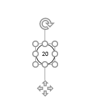